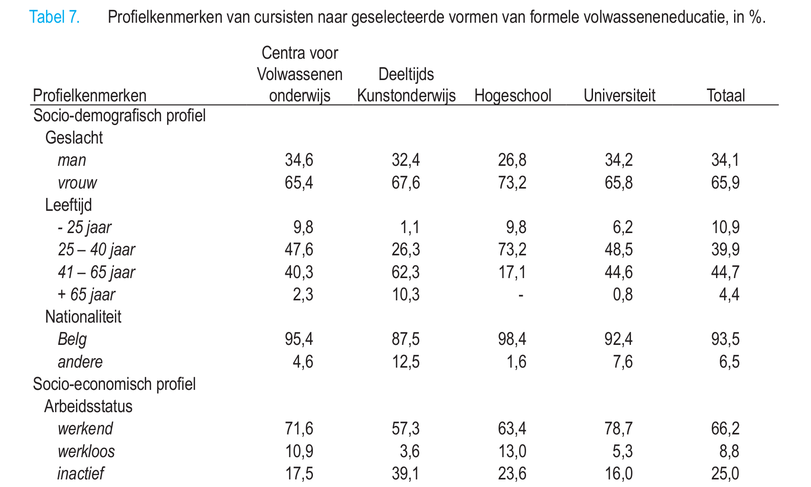
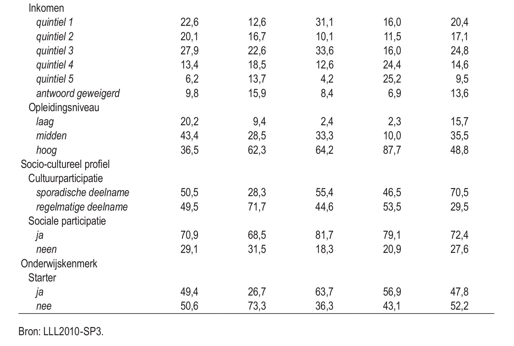
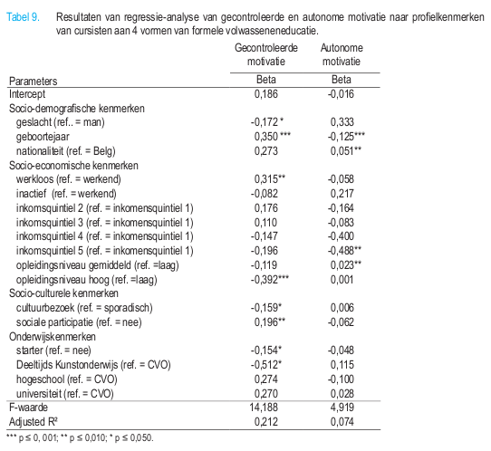

Opdracht was
- Lees Boeren & Nicaise (2009)
- Boeren, E., & Nicaise, I. (2009). 'Onderwijs voor volwassenen: wie
neemt deel en waarom? In L. Vanderleyden, M. Callens, & J.
Noppe, De sociale staat van Vlaanderen 2009 (pp. 315-330).
Brussel: Studiedienst van de Vlaamse Regering.
- Abstract + kern + kritische bespreking
Leesopdracht
- Formeel volwassenenonderwijs: Wie neemt deel en waarom
- Wie
- Profiel
- Waarom
- Autonome motivatie
- Gecontroleerde motivatie
Tabel 7: profielkenmerken

Tabel 7: profielkenmerken

Tabel 7: profielkenmerken

Socio-demografisch
- Vrouwen
- 25 tot 40 jarigen (behalve deeltijds kunstonderwijs)
- Niet-Belgen: nuanceren (NL in kunstonderwijs en universiteiten, weinig in hogeschool, NL-talige vragenlijst)
Socio-economisch
- Werkenden
- Meer dan inactieven
- Meer dan werklozen
- Vooral hooggeschoolden (behalve CVO’s)
- Mattheüseffect
- Wie reeds een diploma hoger onderwijs behaald heeft, neemt 2 à 3 maal meer deel aan een educatieve activiteit
Socio-cultureel
- Ong. fifty – fifty m.b.t. cultuurparticipatie (met uitzondering van deeltijds kunstonderwijs)
- Meer sociaal actieven (2/3 tot over 3/4)
Starters
- Hangt af van de instellingen
- Tertiar: meer starters
- CVO: ongeveer de helft
- Deeltijds kunstonderwijs: iets meer dan een kwart
- Opgelet: verschil in structuur en duur van de opleidingen
Algemeen
- Absolute cijfers: meer 41 tot 65-jarigen (verschil met de relatieve/gewogen cijfers)
- 1 op 4 is inactief
- Bijna de helft is hoog opgeleid
Gecontroleerde motivatie
- Meer gecontroleerd gemotiveerd zijn:
- Mannen
- Jongere deelnemers
- Werklozen
- Laag opgeleiden (enkel vs. hoog)
Gecontroleerde motivatie
- Meer gecontroleerd gemotiveerd zijn:
- Sporadische cultuurbezoekers
- Sociaal actieven
- Niet-starters (dus wie langer bezig is)
- Niet-deeltijds kunstonderwijs (dus wie naar CVO of universiteit/hogeschool gaat)
Autonome motivatie
- Meer autonoom gemotiveerd zijn:
- Vrouwen
- Oudere deelnemers
- Laag inkomen (enkel t.o.v. hoogste)
- [gemiddeld opleidingsniveau]
- Opgelet: R² = 0.074
Tabel 9: resultaten regressieanalyse

Tabel 9
- Intercept
- Man / Belg / Werkend / Inkomenskwartiel 1 / Laag opleidingsniveau / Sporadisch cultuurbezoek /
Geen sociale participatie / Geen Starter / Gaat naar een CVO / “geboortejaar nul”
Tabel 9
- Wat is de Beta voor gecontroleerde motivatie voor een
- Belgische vrouw
- Werkend, in hoogste inkomsquintiel en met hoog opleidingsniveau
- Met veel cultuurbezoek en geen sociale participatie
- Die start aan de universiteit
Intercept
0.186
Vrouw
-0.172
Belg
/
Werkt
/
Hoogste inkomsquintiel
-0.196
Hoog opleidingsniveau
-0.392
Veel cultuurbezoek
-0.159
Geen sociale participatie
/
Starter
-0.154
Aan Universiteit
+0.270 -------------
TOTAAL
-0.617